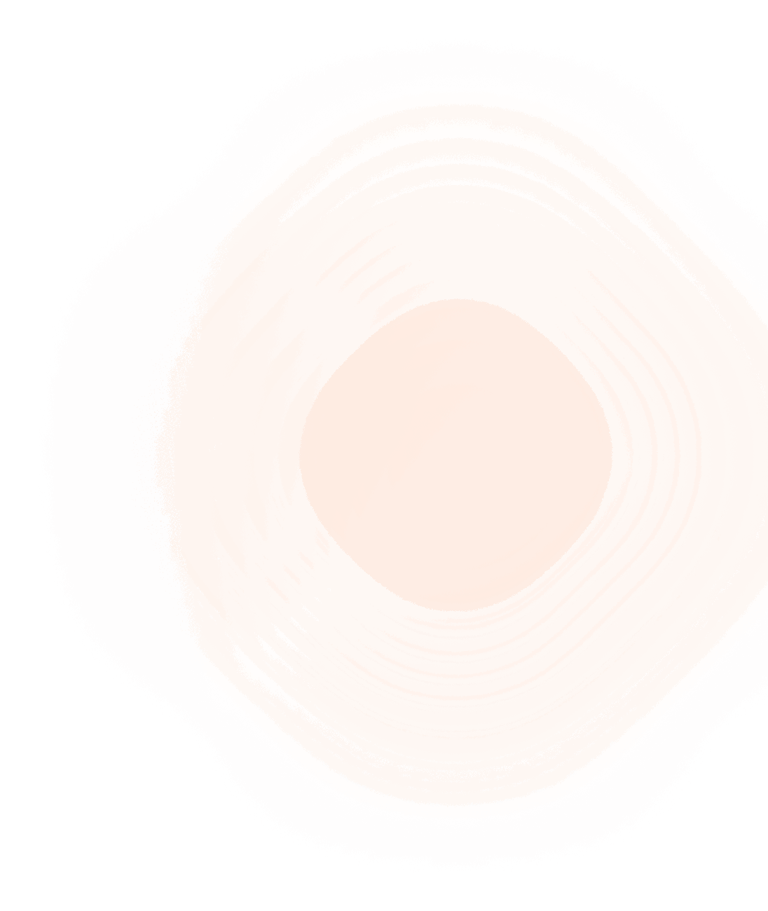

Развёртывание
Docker Compose — Полный стек
Файл docker-compose.yml в корне проекта описывает 8 сервисов:
postgres — postgres:16-alpine (порт 5435:5432) minio — minio/minio:latest nginx — nginx:alpine (реверс-прокси для MinIO) kafka — apache/kafka:latest api — сборка из Dockerfile (FastAPI) worker — сборка из Dockerfile (фоновый обработчик) prometheus — prom/prometheus grafana — grafana/grafana
# Запуск docker compose up -d # Логи конкретного сервиса docker compose logs -f api # Остановка с удалением томов docker compose down -v
Переменные для Production
- VK_SECRET_KEY — сгенерировать надёжный ключ
- DB_PASSWORD — надёжный пароль
- MINIO_ROOT_PASSWORD — надёжный пароль
- MINIO_PUBLIC_URL — публичный домен MinIO
- ANALYSIS_GRPC_URL — адрес gRPC анализатора
- LOG_LEVEL — WARNING для production
Kubernetes (kind)
Манифесты (k8s/, 11 файлов)
00-namespace.yaml — Namespace umnaya 01-configmap.yaml — ConfigMap 02-secret.yaml — Secret 03-postgres.yaml — Deployment + Service PostgreSQL 04-minio.yaml — Deployment + Service MinIO 05-kafka.yaml — Deployment + Service Kafka 06-api-deployment.yaml — Deployment API 07-api-service.yaml — Service API (ClusterIP) 08-worker-deployment.yaml — Deployment Worker 09-nginx.yaml — Deployment + Service Nginx 10-volumes.yaml — PV + PVC
Деплой
kind create cluster --name umnaya
docker exec umnaya-control-plane mkdir -p /var/lib/umnaya/{postgres,minio,kafka}
docker build -t umnaya-api .
kind load docker-image umnaya-api --name umnaya
kubectl apply -f k8s/
kubectl port-forward -n umnaya svc/api-service 8000:8000 --address 0.0.0.0
Особенности
- initContainer wait-postgres: ждёт готовности PostgreSQL перед запуском API
- initContainer alembic-upgrade: применяет миграции перед стартом API
- livenessProbe: GET /healthz (порт 8000)
- readinessProbe: GET /readyz (порт 8000)
- PersistentVolume: hostPath /var/lib/umnaya/
- StorageClass: manual
Dockerfile
FROM python:3.14-slim
WORKDIR /app
COPY requirements.txt .
RUN apt-get update && apt-get install -y --no-install-recommends g++ gcc && \
pip install --no-cache-dir -r requirements.txt && \
apt-get purge -y --auto-remove g++ gcc
COPY . .
EXPOSE 8000
CMD ["sh", "-c", "alembic upgrade head && exec uvicorn app.main:app --host 0.0.0.0 --port 8000"]
Образ используется как для API (uvicorn), так и для Worker (python -m app.worker).